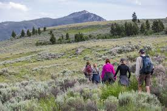
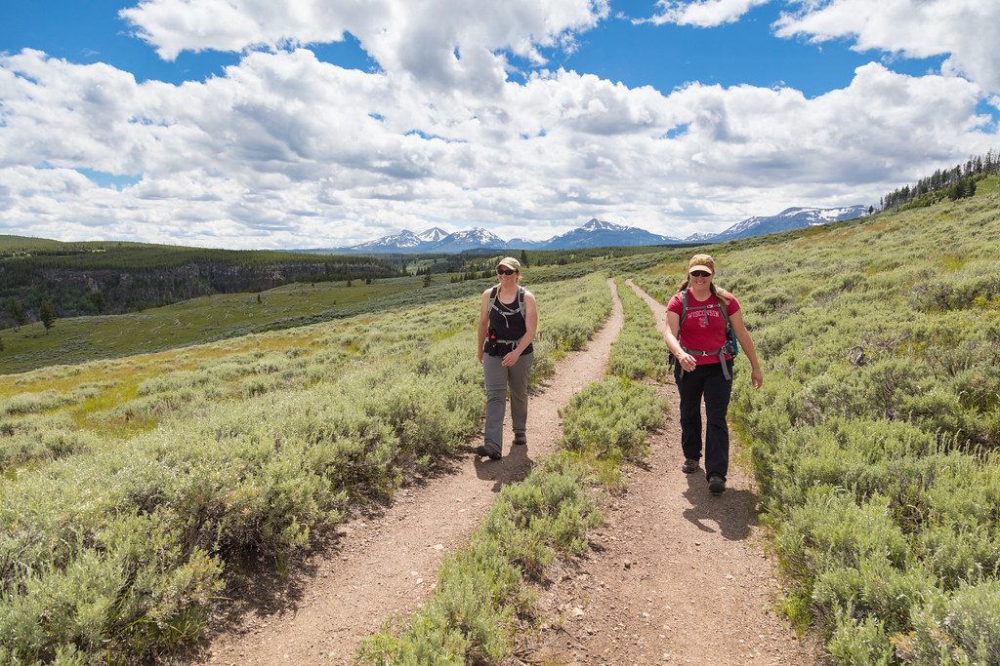
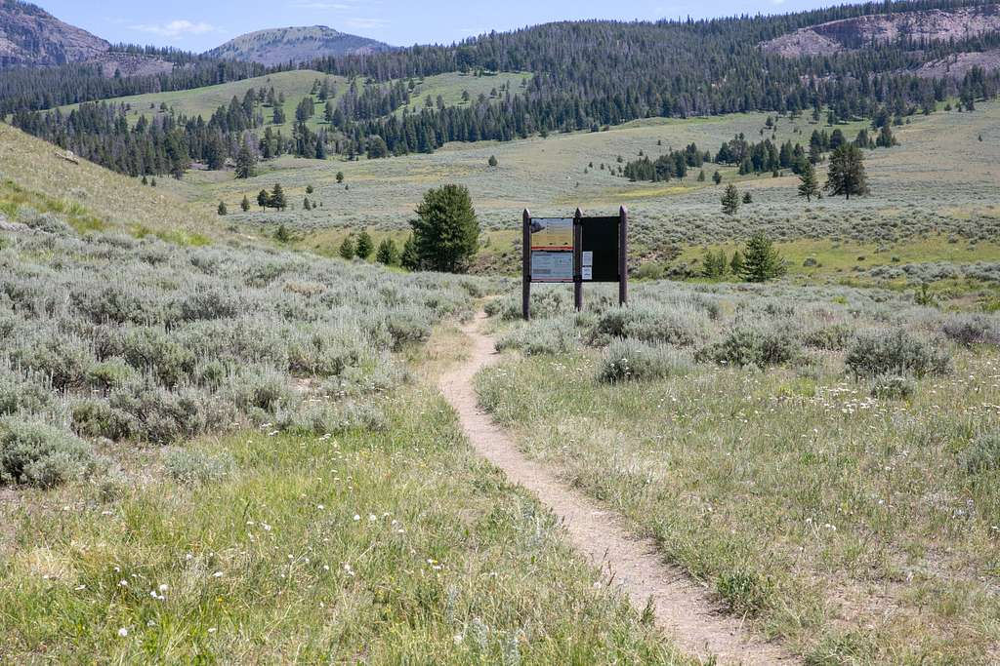
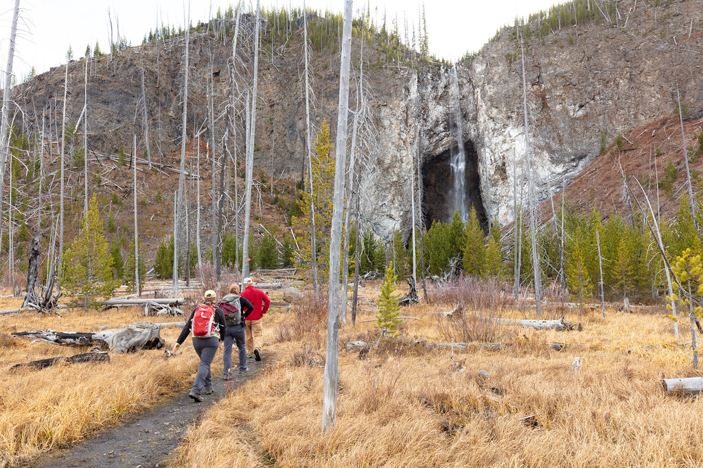
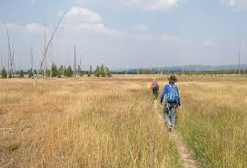
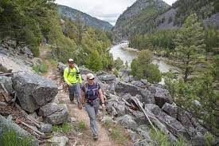

Beavers Pond Trail Loop is 5.5 miles long with 764 feet of elevation gain making this an easy to moderate hike.

Bunsen peak is 4.4 miles long but it has 1200 feet of elevation gain making this a moderate trail.

This trail is Daley Creek. It is 11 miles long with 1700 feet of elevation gain making this a difficult trail.

Fairy Falls is 5.5 miles long with only 170 feet of elevation gain making it accessible to most people.

Sentinel Mountains is 3.5 miles and is considered very easy with only 150ft of elevation gain.

Yellowstone River Trail is 15.5 miles long with 1700 feet of elevation gain and is considered difficult due to the distance.